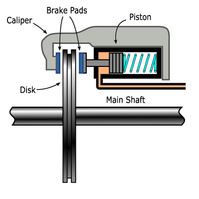

In this session we will explore the functionality of the hydraulic circuit controlling the Brakes. See Braking system .
|
|
 |
The pressure in this circuit is responsible for the separation of the pads from the dissipating disk. The spring is the part that guarantees that the brake is always on whenever there is no pressure in the circuit, implementing the "fail-safe" paradigm: if everything fails the system is in a safe position.
To increase the pressure the valve must be closed and the pump should be working during time enough so the pressure counteracts the force of the spring and the pads are separated from the disk. The measure of the distance between the pads and the disk is done using a limit switch: the adjustment of this distance is indicated as the yellow mark in the "Hydraulic press" widget in next figure.
|
Brake hydraulic circuit sinoptic |
Pump: status of the pump (yellow -> On) Press switch: if On (yellow) the Pads separated from the disk HardBrake: If On (yellow) the valve is activated and, in a short time, the pressure in the hydraulic circuit drops below the "Press switch" limit. SoftBrake: (Optional) Similar to HardBrake, but with smaller speed in the reduction of pressure in the circuit. Pressure switch (green zone): the pressure limits corresponding to the calibration of the pressure switch and its hysteresis. Hydraulic Press(ure): pressure in the circuit as percent over the limit of the pressure switch. |
While in production or idle states the actual pressure in the circuit is kept at a much higher pressure than this yellow limit. This approach has to do with the fact that the brake disk is normally not used for stopping the rotation of the Drive Train: that would required a very high thermal capacity disk and the ability to dissipate the kinetic energy of the Drive Train in production. This brake is used for keeping the Drive Train without rotation once it is stopped.
The simulation of this circuit and its elements are implemented in the Nacelle Emulator. The associated signals are the following signals:
|
Output signals |
|
|
Nacelle.Braking.BrakeReleasedOut |
The pressure is higher than the yellow mark,ie, the disc is free. |
|
Nacelle.Braking.PressureSwitchOut |
If On, the pressure is higher than the pressure switch calibration. If Off, the pressure is lower than the pressure switch minus its hysteresis. |
|
Input Signals |
|
|
Nacelle.Braking.PumpIn |
Digital; it controls the status of the pump. |
|
Nacelle.Braking.ValveHardBrake |
Digital; it controls the status of the high speed valve. |
|
Nacelle.Braking.ValveSoftBrake |
Digital; it controls the status of the low speed valve. |
|
Nacelle.Braking.PumpCaudalIn |
Analog; speed of increment of pressure due to the pump. Connected to "Parameter.NacelleBrake.PumpCaudal". |
|
Nacelle.Braking.LeakageBrakeHudrCircuit |
Analog; speed of loss of pressure due to overall leakages in the circuit (pump, valve, connections, etc). Connected to "Parameter.NacelleBrake.LeakageBrakeHudrCircuit". |
The Controller of the Wind Turbine receives the "Nacelle.Braking.BrakeReleasedOut" and "Nacelle.Braking.PressureSwitchOut" signals and creates the signals "Controller.Control.HardBrakeOut", "Controller.Control.PumpOut" that end up connected to "Nacelle.Braking.ValveHardBrake" and "Nacelle.Braking.PumpIn" but through the SynopticDriveTrain buttons in the "Brake hydraulic circuit synoptic" shown above.
Next figure shows the interconnections between elements in the synoptics.

In the figure above the output signal "Controller.Control.PumpOut" instead of been connected to the Pump in the Nacelle is connected to an intermediate widget, tag with "Pump". This widget is shown in its "Following Input" mode, meaning that it will do two things:
1.To indicate the value of its input ( "Controller.Control.PumpOut") through the color of its button.
2.To transmit that input value to its output.
One benefit of this approach is that the user has a very easy to use method to "create" faults, just changing the widget mode from "Following Input" to "Forcing output". This change is done pressing "F6" while the widget is selected, and is indicated by the color of the surrounding line: "green" for "Following Input" mode and "red" for "Forcing output" mode.
While in the "Forcing output" the output of the widget obeys only to the state of the button, that is disconnected from the input, and can be manipulated by the user. Thus we can create situations in which some controlled elements are actually disconnected from the Controller, breaking the normal working conditions and potentially creating "simulated" failures.
The Controller monitors the Controller.Control.PressureSwitchIn and uses the Controller.Control.PumpOut and Controller.Control.HardBrakeOut to control the pressure in the hydraulic circuit, according to the value it should have at every moment.